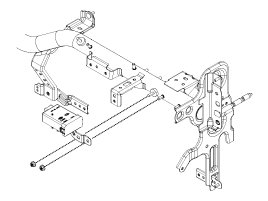
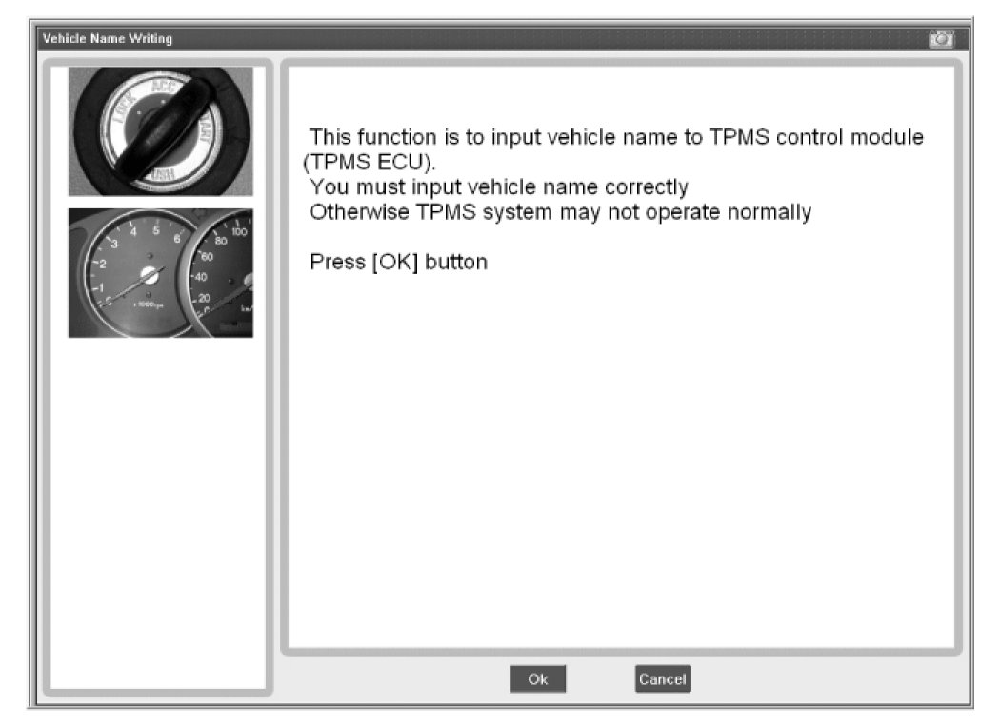
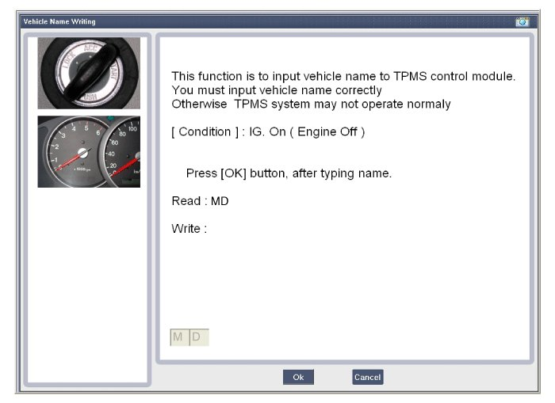
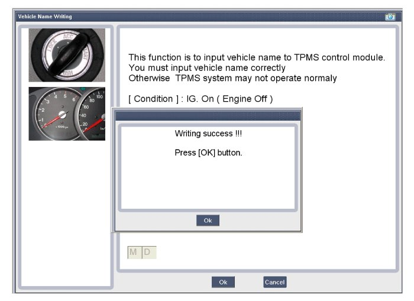
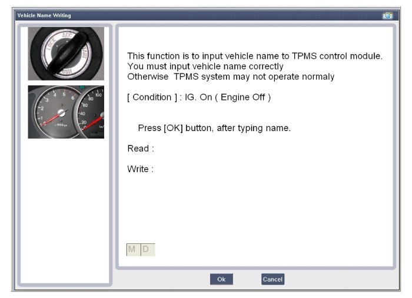
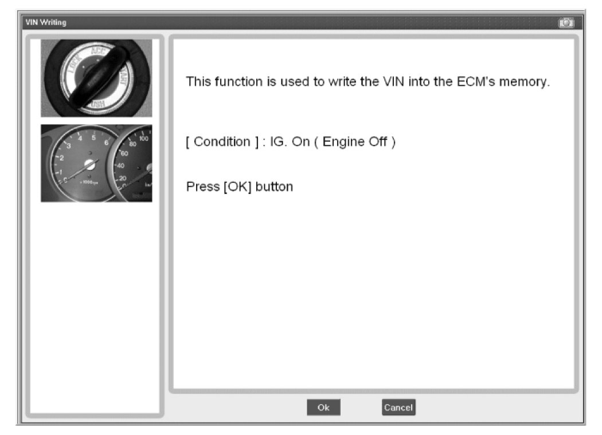
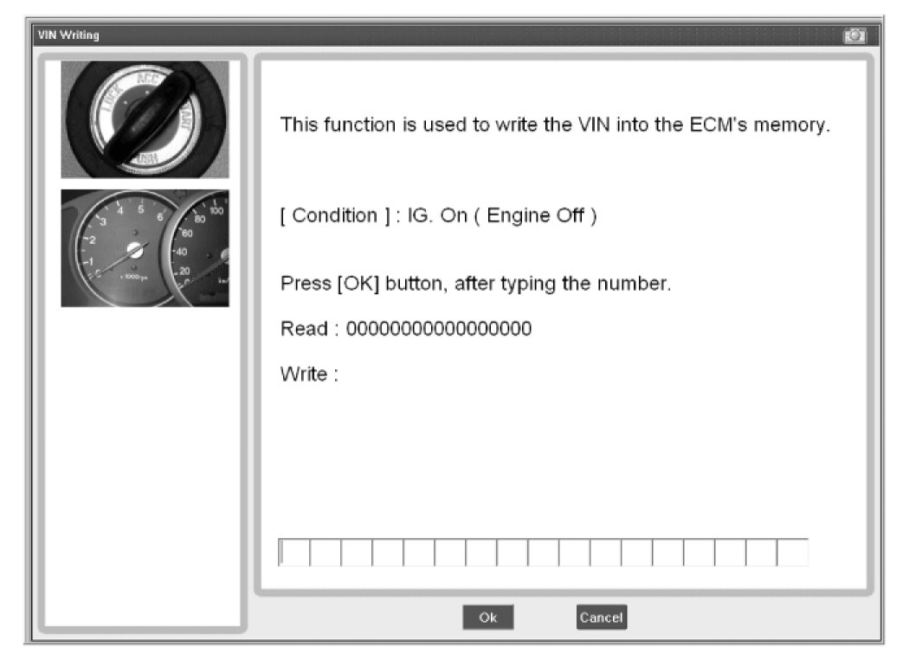
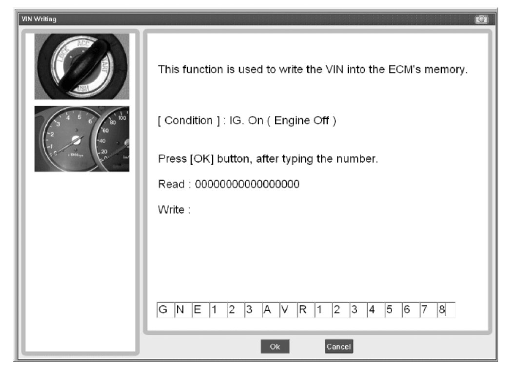
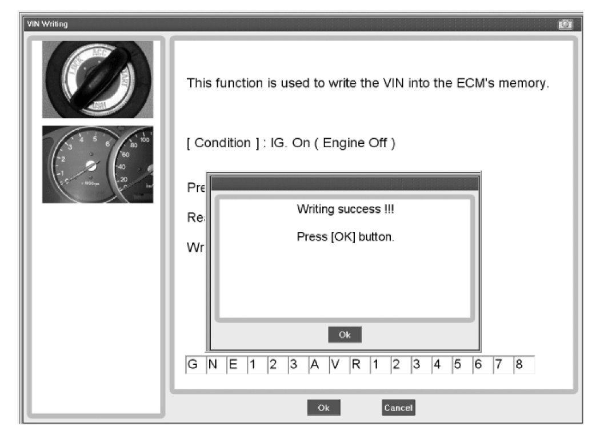

Tire Pressure Monitor Receiver / Transponder: Service and Repair
Replacement
NOTE:
When the receiver first arrives for replacement:
1) It will be in Virgin State.
2) It will not be configured for any specific platform.
3) It will not have any sensor ID's memorized.
CAUTION:
It is important to make sure that the correct receiver is used to replace the faulty part i.e. it must be Low Line and not High Line in order to have the correct inflation warning thresholds set.
1. Disconnect vehicle battery.
2. Remove the glove box.
3. Remove faulty part and fit bracket assembly to new part.

4. Secure new part to vehicle and fit connector.
5. Re-connect battery and turn Ignition on.
6. Check that TREAD Lamp flash rate matches Virgin State indication.
Vehicle Name Writing




VIN Writing



